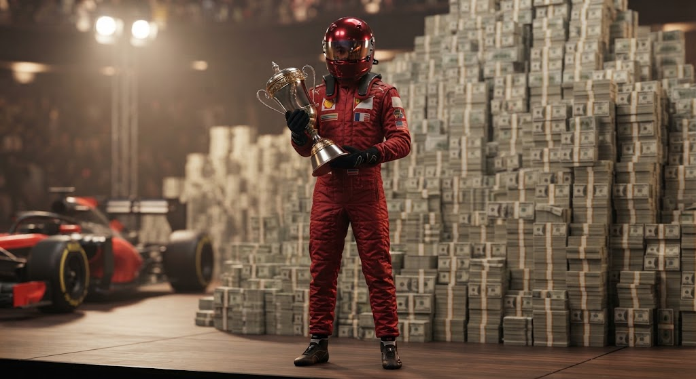
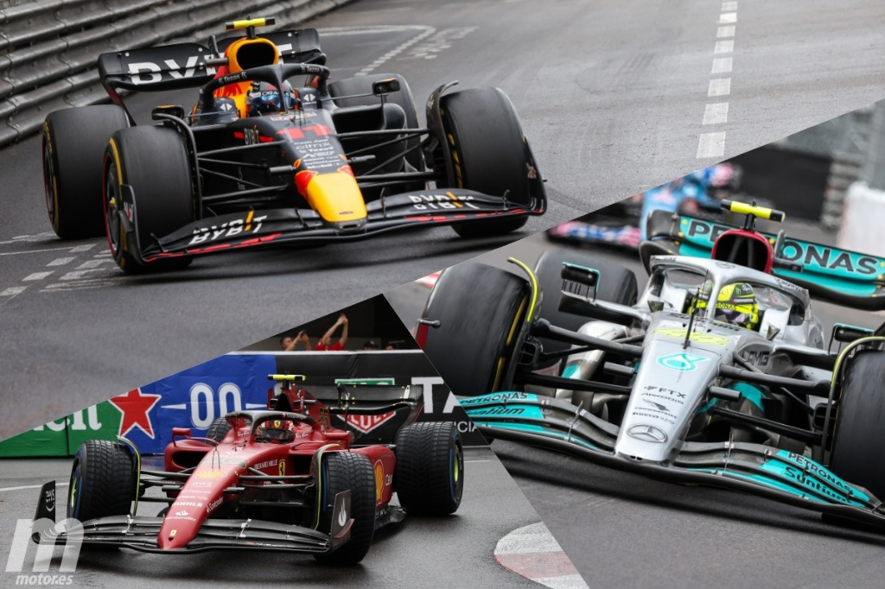
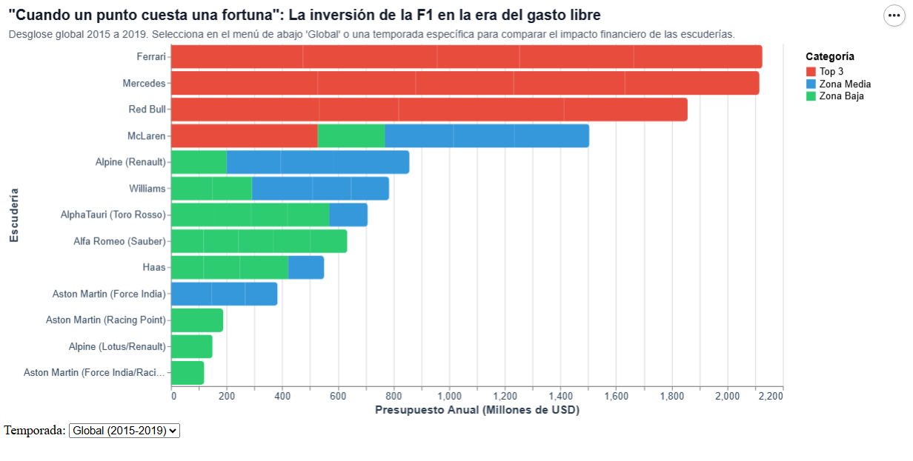

Introducción a la era del gasto libre
Hubo un tiempo en la máxima categoría del automovilismo mundial en el que ganar no solo dependía del talento de los pilotos o del ingenio del equipo... El ganador se definía por el "ancho de su billetera". Entre 2015 y 2019, la Fórmula 1 transitó por su último gran periodo de libertad financiera absoluta, una era histórica conocida como la del gasto libre, justo antes de que la irrupción global de la pandemia y la posterior llegada del límite presupuestario transformaran para siempre las reglas de la pista.
Al hacer memoria y analizar los datos de aquellos años, se expone una asimetría estructural abismal: gigantes corporativos como Mercedes, Ferrari y Red Bull operaron con inversiones ilimitadas, inyectando cifras multimillonarias de entre 400 y 500 millones de dólares anuales por escudería. Mientras que los equipos recién llegados o de categorías inferiores luchaban por la supervivencia con apenas un tercio de esos recursos.
Representación visual de la enorme concentración de recursos financieros en la cima de la categoría:

La evolución tecnológica y el motor de los costos
Para comprender la magnitud de esta era, es imperativo mirar bajo el capó de la ingeniería y el desarrollo técnico. La Fórmula 1 no es solo una carrera de velocidad, sino una vitrina de innovación implacable donde cada milisegundo en pista se traduce en millones invertidos. Los mayores beneficiados y a la vez el motor principal de este colosal gasto económico son los propios monoplazas de competición: piezas de ingeniería ultra avanzada cuyos costos de desarrollo, diseño aerodinámico y manufactura absorben la mayor parte del presupuesto anual de los equipos.
Durante este lustro, presenciamos cambios profundos y vertiginosos. Desde la sofisticación de las unidades de potencia híbridas hasta las radicales evoluciones en la aerodinámica de los chasis, que pasaron de configuraciones más simples a complejos flujos de aire milimétricos diseñados en túneles de viento operativos las 24 horas. Del mismo modo, la gestión técnica experimentó transformaciones cruciales, como el comportamiento y la durabilidad de los neumáticos bajo altísimas cargas de downforce, obligando a ingenieros y pilotos a replantear por completo la estrategia de carrera.
Paralelamente, la forma en que consumimos y vivimos la categoría ha cambiado de manera radical. El registro audiovisual, las cámaras cenitales a bordo, la alta definición y la transmisión global se han convertido en experiencias inmersivas totales. Sin embargo, toda esta revolución visual y tecnológica estuvo impulsada por la chequera de los constructores dominantes, ensanchando la brecha frente a quienes apenas podían mantener sus operaciones a flote.
Comparativa visual de los monoplazas que protagonizaron la lucha en pista:

Comportamiento temporada a temporada (2015-2019)
A continuación se puede revisar el comportamiento temporada a temporada (2015-2019), analizando cómo la inversión récord de los líderes en las carreras traía consigo los puntos. Donde vemos que hubo escuderías que llegaron a gastar más de un millón de dólares por cada punto solitario sumado en el campeonato, demostrando que el dinero masivo no siempre les garantizaba el rendimiento de una forma óptima en cuanto a sus inversiones financieras.
Desglose global y métricas de rendimiento financiero de las escuderías en el lustro analizado:

Conclusión
Este modelo de competencia desregulada se convirtió en una bomba de tiempo insostenible. La brecha insalvable entre los tres grandes y el resto de la parrilla puso en riesgo la viabilidad de la categoría, obligando a las autoridades a poner fin definitivo a esta etapa mediante la implementación de un estricto límite presupuestario.
Referencias y fuentes de información
- Datos financieros: EssentiallySports - F1 Team Budgets (2015-2019)[cite: 18]
- Registros deportivos oficiales: Formula 1 Official Results - Constructor Standings[cite: 18]